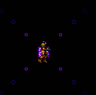
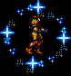
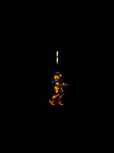
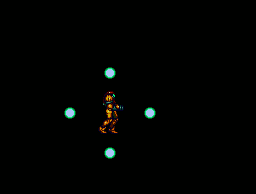

Furthermore all beams, have a special effect when paired only with charge beam. The effect occurs when a power bomb is selected and charge is held. This causes beam particles to appear in a certain pattern.
This is by far the most useful of the different beam attacks. The attack itself spawns four wave-beam particles that move towards Samus, arching chaotically with every movement. The combo has applications within three of the five main bossfights in the run, and can be used on the one miniboss in any% aswell.
This effect causes four Ice beam particles to circle around Samus. Since the four particles deal slightly more damage than a power bomb it's optimal for categories which don't have wavebeam, and need damage.
This effect causes two spazer-like shots to circle around Samus, from her head to her feet. Then going back up, to finally rain down again. The combo has some uses in nieche categories, but isn't widely used.
This attack creates a number of green orbs that circle around Samus, piercing any enemies as they do. The combo doesn't currently have any optimal uses within runs.
There is one main glitch with beams, and it involves selecting both Spazer and Plasma, which are mutually exclusive. To perform this glitch, set spazer as active and move over to your boot item of choice. Then, press left and equip at the exact same time. Time it early and you'll unequip your boot item, time it late and you'll equip plasma, unequiping spazer in the process. If you do time it correctly both Spazer and Plasma should be equiped, with plasma having a glitched label, with "var" on it.
From here, a lot of different buggy behaviour can be attained by using different combos.